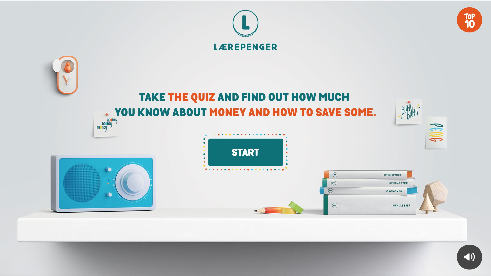
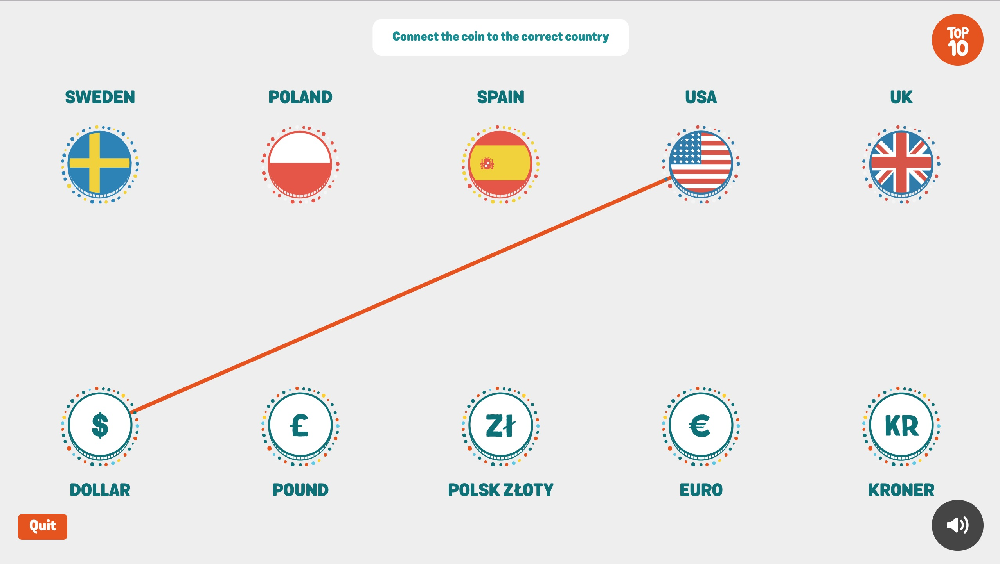
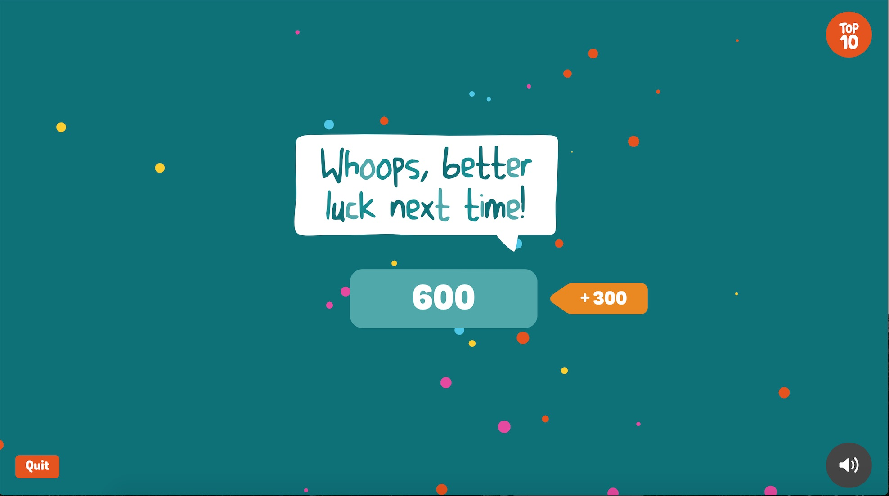
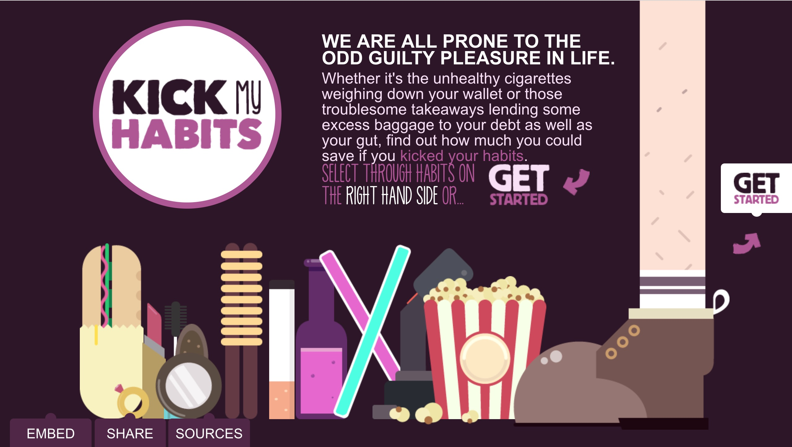
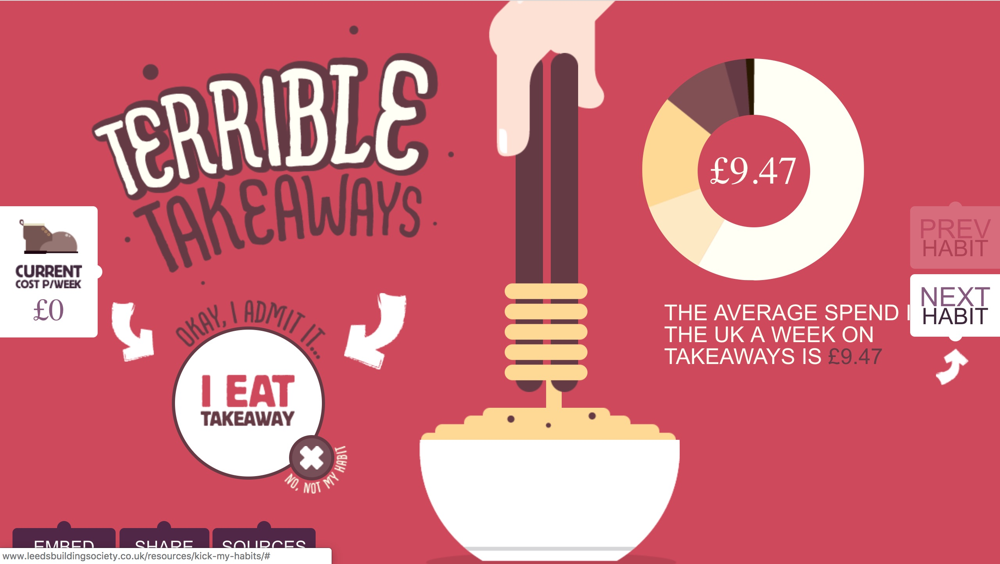
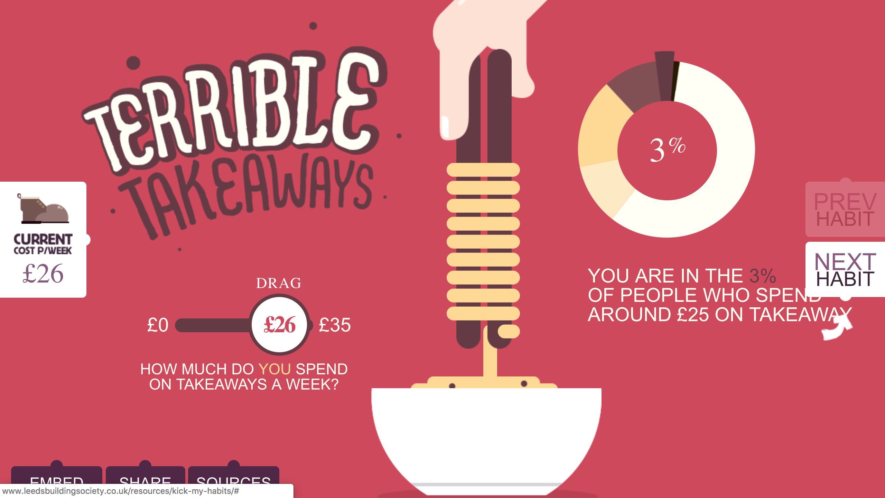
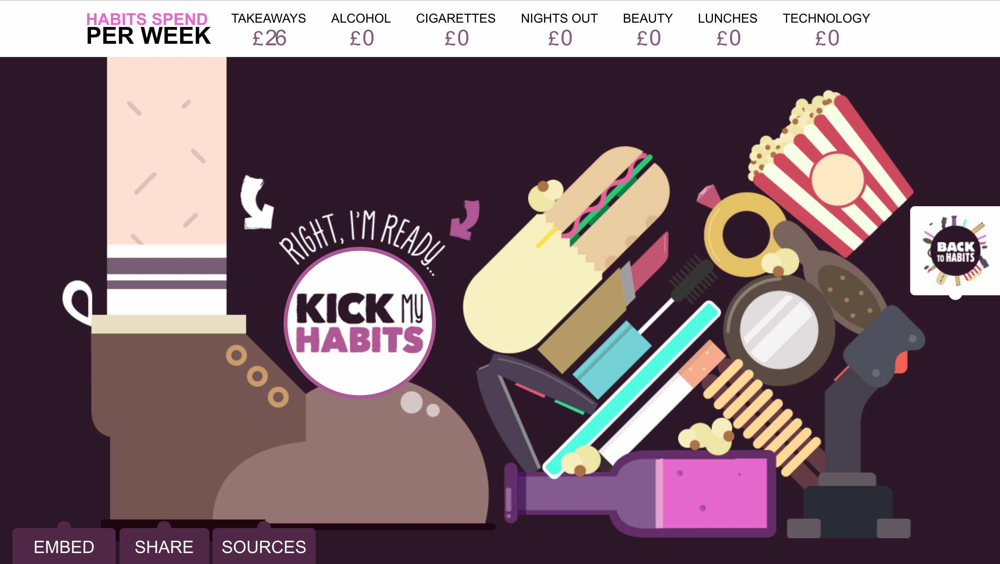
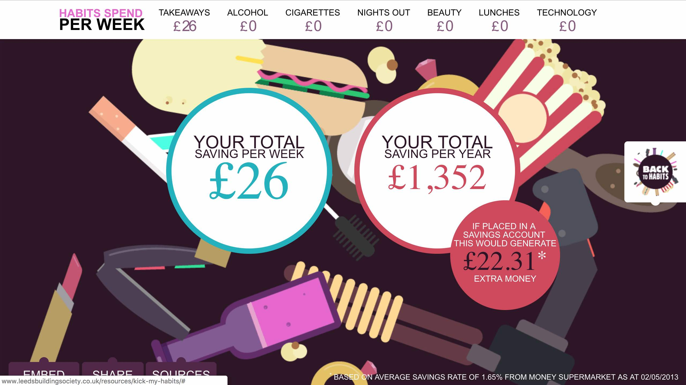

Laerepenger Quiz
Source: Laerepnger Quiz
Laerepenger Quiz is an interactive website that primarily focuses on the user’s options. The site doesn’t give away much context in the beginning, however it makes a simple statement - “ Take the quiz and know how much you know about money and how to save some” and a call-to-action button below it in highlighter orange. With leading curiosity, the user proceeds to click the start button which leads them through series of simple questions like name, sex, age, and location.
 Although the questions are typical, the site does a good job using negative space by displaying only one question per slide so it doesn’t discourage the user from continuing. The series of questions personalize the quiz according to the user’s
answers and follows to the main course of the quiz. The quiz itself is designed in an interactive and fun format, almost like a game and not the usual fill in the blank or multiple choice questions. The site also has different sound effects
to each button.
Each time the user completes a question or solves a problem, they collect coins for the amount of right answers. At the end of the game the site adds up the score. From the score the user can really see if their knowledge of money is good as they thought.
Kick My Habits
Source: Kick My Habits
Kick My Habits is another interactive website that is playful, educational, and thought provocative. The website helps users to kick some bad habits that could be hurting their lifestyle and money. The site consists of common costly bad habits when practiced often.
 There is a switch button under every bad habit, and asks if the user agrees that they have this bad habit or not. If the user does, then a click-and-drag pops out for the user to drag exactly how much money they spend on that specific bad habit per week. If the user says they don’t have this bad habit, then they skip ahead to the next slide of a different bad habit and so on. Each bad habit page also displays a donut graph that shows a percentile the user is at spending wise compared to the general population of people with similar bad habit.
 This display of information can be provocative to the user. The user goes through all sorts bad habits ( smoking, drinking, eating out..etc) and arrive at the last page - to kick their bad habits with an graphic moving foot kicking the user’s bad habits. The website then tells the user how much money they could actually save if they don’t act on their bad habits. Seeing everything in numbers and signs encourages the users to maybe even take action to kick some of their bad habits.